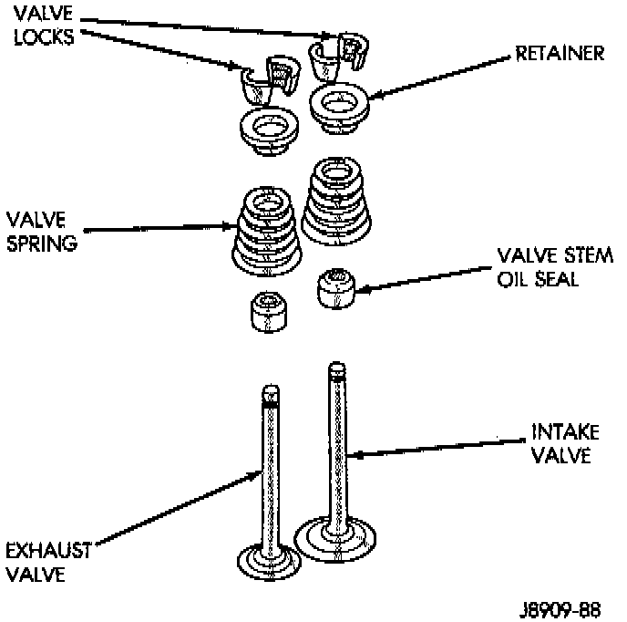

Cylinder Head On

NOTE: This procedure can be done with the engine cylinder head installed on the block.
REMOVAL
Inspect the valve stems, especially the grooves. An Arkansas smooth stone should be used to remove nicks and high spots. Each valve spring is held in place by a retainer and a set of conical valve locks. The locks can be removed only by compressing the valve spring.
1. Remove the engine cylinder head cover.
2. Remove capscrews, bridge and pivot assemblies ,and rocker arms for access to each valve spring to be removed.
3. Remove push rods. Retain the push rods, bridges, pivots and rocker arms in the same order and position as removed.
4. Inspect the springs and retainer for cracks and possible signs of weakening.
5. Remove the spark plug(s) adjacent to the cylinder(s) below the valve springs to be removed.
6. Connect an air hose to the adapter and apply air pressure slowly. Maintain at least 621 kPa (90 psi) of air pressure in the cylinder to hold the valves against their seats. For vehicles equipped with an air conditioner, use a flexible air adaptor when servicing the No.1 cylinder.
7. Tap the retainer or tip with a rawhide hammer to loosen the lock from the retainer. Use Valve Spring Compressor Tool MD-998772A, or equivalent to compress the spring and remove the locks.
8. Remove valve spring and retainer.
9. Remove valve stem oil seals. Note the valve seals are different for intake and exhaust valves. The top of each seal is marked either INT (Intake) or EXH (Exhaust). DO NOT mix the seals.
CAUTION: Install oil seals carefully to prevent damage from the sharp edges of the valve spring lock grove.
INSTALLATION
1. Lightly push the valve seal over the valve stem and valve guide boss. Be sure the seal is completely seated on the valve guide boss.
2. Install valve spring and retainer.
3. Compress the valve spring with Valve Spring Compressor Tool MD-998772A, or equivalent and insert the valve locks. Release the spring tension and remove the tool. Tap the spring from side-to-side to ensure that the spring is seated properly on the engine cylinder head.
4. Disconnect the air hose. Remove the adaptor from the spark plug hole and install the spark plug.
5. Repeat the procedures for each remaining valve spring to be removed.
6. Install the push rods. Ensure the bottom end of each rod is centered in the plunger cap seat of the hydraulic valve tappet.
7. Install the rocker arms, pivots and bridge at their original location.
8. Tighten the bridge capscrews alternately, one at a time, to avoid damaging the bridge. Tighten the capscrews to 28 Nm (21 ft. lbs.) torque.
9. Install the engine cylinder head cover.